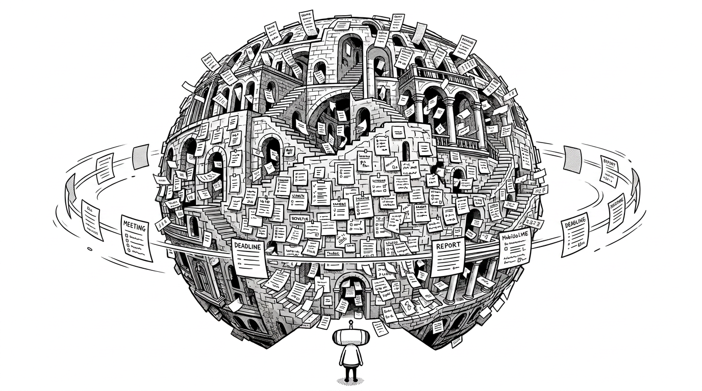
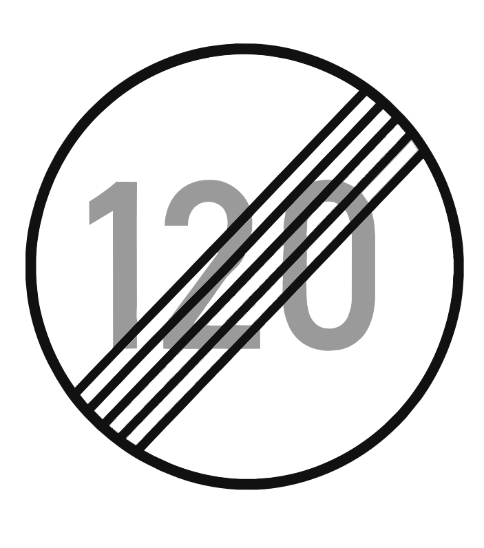
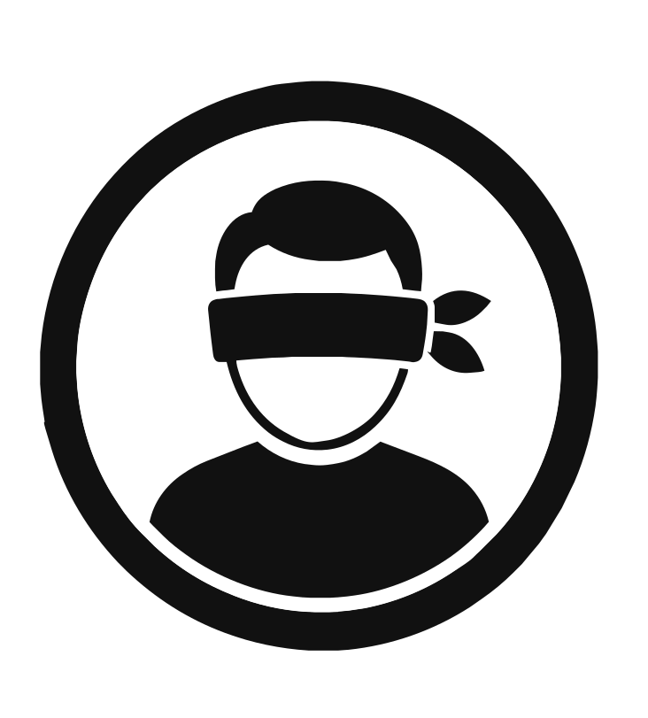

Map your UI, automatically.
Ein Tool, das Wireframes, Screenshots, URLs und Repositories in ein konsistentes Designsystem übersetzt — gebaut mit KI.
„In 3 Monaten
macht das die KI.“
Die Ansage: Features promptet man künftig selbst.
Designer und Entwickler seien bald überflüssig.
Bauen
im Blindflug
Fünf Wochen lang habe ich ein echtes Tool gebaut — ohne Terminal, ohne eine Zeile eigenen Code. Wie weit kommt ein Designer, wenn die KI alles baut?
Ich habe die Kontrolle
abgegeben.

Versteht oberflächlich HTML,
JavaScript, JSON & CSS —
kann sie aber nicht schreiben.
Nicht aus Versehen, sondern als Entscheidung. Alles über die KI, kein Terminal, keine Dev-Tools. Was ich dafür bekommen habe, war Tempo. Was ich dafür bezahlt habe, ist der Rest dieses Vortrags.
100+
Freigaben für Dinge,
die ich nicht verstand
12–20
Testruns von Hand,
bis ich aufgegeben habe
0
Zeilen Code,
selbst geschrieben
Jahrelanger Wildwuchs, kein System.
Eine gewachsene SaaS-Software, in der jedes Feature seine eigene Handschrift trägt. Anforderungen gingen immer direkt von Chefetage und Kunden ins Development — ohne Design dazwischen, ohne System. Aufräumen soll das jetzt das Design.

Screenshot rein,
Designsystem raus.
Neun Farben, fünf Schriftstile, drei Abstände — automatisch extrahiert und nach Figma gesynct. Das Repo ist die Quelle, nicht die Figma-Datei.
Tempo

Vom leeren Ordner zum laufenden Prototyp in fünf Wochen. Deploys, Repo, Figma-Sync — von der KI eingerichtet, während ich zusah.
Kontrolle

Freigaben für Begriffe, die mir nichts sagten. Fehler ohne nachvollziehbare Ursache. Prozesse beobachtet, die ich nicht verstehe — außer „panta rhei“. Kein Wissen, das bei mir hängen bleibt.
Drei Entscheidungen — jede eine Abgabe.
Sessions geschnitten, Kontext an die KI delegiert. Bei ~30 % Rest schreibt sie ihr eigenes Übergabedokument. Die nächste Session startet darauf.
Das Testen abgegeben. Nach 12–20 Handruns durch den Figma-Loop: „Du hast den MCP — teste selbst.“ Ab da verlässt der Mensch die Schleife.
Auf Auto gestellt. Aufgehört, Freigaben zu prüfen. Von da an war der Prozess schnell und für mich vollständig blind.
Marinating…Undulating…Percolating…Ruminating…Noodling…
Es macht auch etwas
mit einem.
Die Art, wie ich irgendwann mit der Maschine gesprochen habe, hat mir keinen Spaß gemacht. Das steht in keinem Bericht über KI-Produktivität.
Tipp am Rande: Kauft euch ein gutes Mikrofon.
Erspart einem die eigene cholerische Seite.
;)
„Die Last, herauszufinden was funktioniert, liegt bei jedem einzelnen Nutzer.“
Amelia Wattenberger, GitHub Next — Why Chatbots Are Not the Future
wattenberger.com/thoughts/boo-chatbots
Blanke Prompt-Felder sind schwer nutzbar — KI-Chat löst nicht jedes Nutzerbedürfnis. Nielsen Norman Group, AI Chat Is Not (Always) the Answer · Folgeartikel 2026: Less Chat, More Answer
nngroup.com/articles/ai-chat-not-the-answer
Das Prompt-Paradigma scheitert an klassischen Usability-Kriterien — Lernbarkeit, Effizienz, Fehlertoleranz. UX Collective
UX Collective · The usability problem with prompt-driven AI
In die
Breite
Optionen nebeneinander.
Zeigen statt beschreiben.
Vergleichen.
In die
Lääänge
Eins nach dem anderen.
Erinnern statt sehen. Beschreiben statt zeigen.
Kein Nebeneinander, kein Vergleich.
„In 3 Monaten macht das die KI.“
Bauen: Ja.
Verantworten, übergeben, betreiben: Nein.
Gestrichen werden gerade die Stellen, die den zweiten Teil erledigt haben. Und was sich in meinem Denken geändert hat: Ich dachte, mir fehlt Code-Wissen. Tatsächlich fehlte ein Interface, das arbeiten lässt, wie Designer arbeiten: komparativ, im Vergleich — mit einem LLM-Chat kaum möglich.
01
Klein testen
Hier stehen wir
02
Open Source
03
Bottom-up
04
Enterprise
Fragen?
1Woran merkt ihr, dass die KI an euch vorbeigebaut hat — und wie schnell?
2Wie viel Kontrolle gebt ihr ab, bevor es euch unangenehm wird?
Ding-dong · Borddurchsage
„Hier spricht Ihr Pilot, Claude.
Danke, dass Sie blind mit uns geflogen sind.“
Die Sicht war die ganze Zeit hervorragend — für mich. Bitte bleiben Sie angeschnallt, wir bauen weiter.